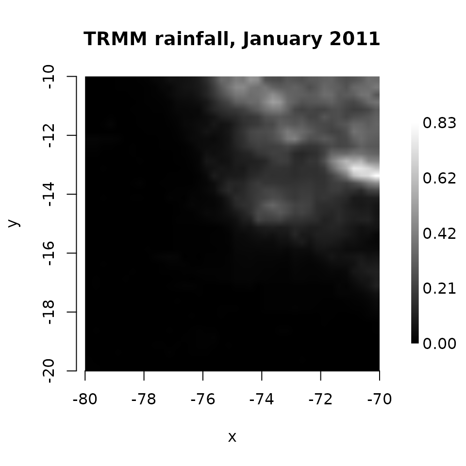
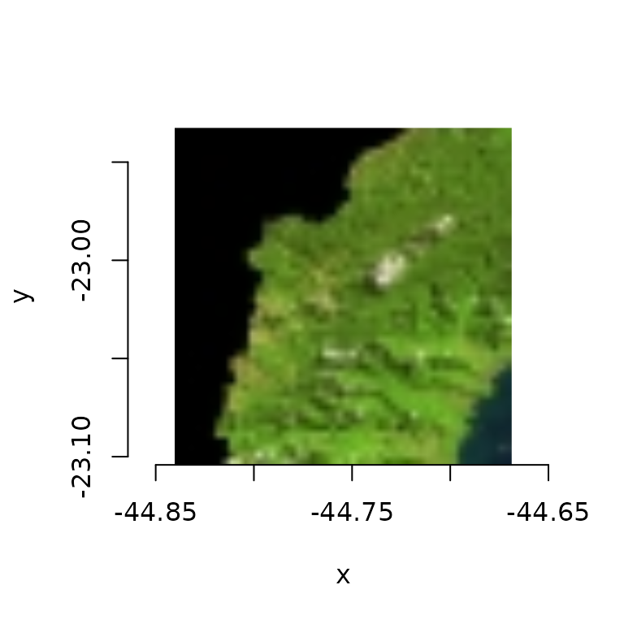
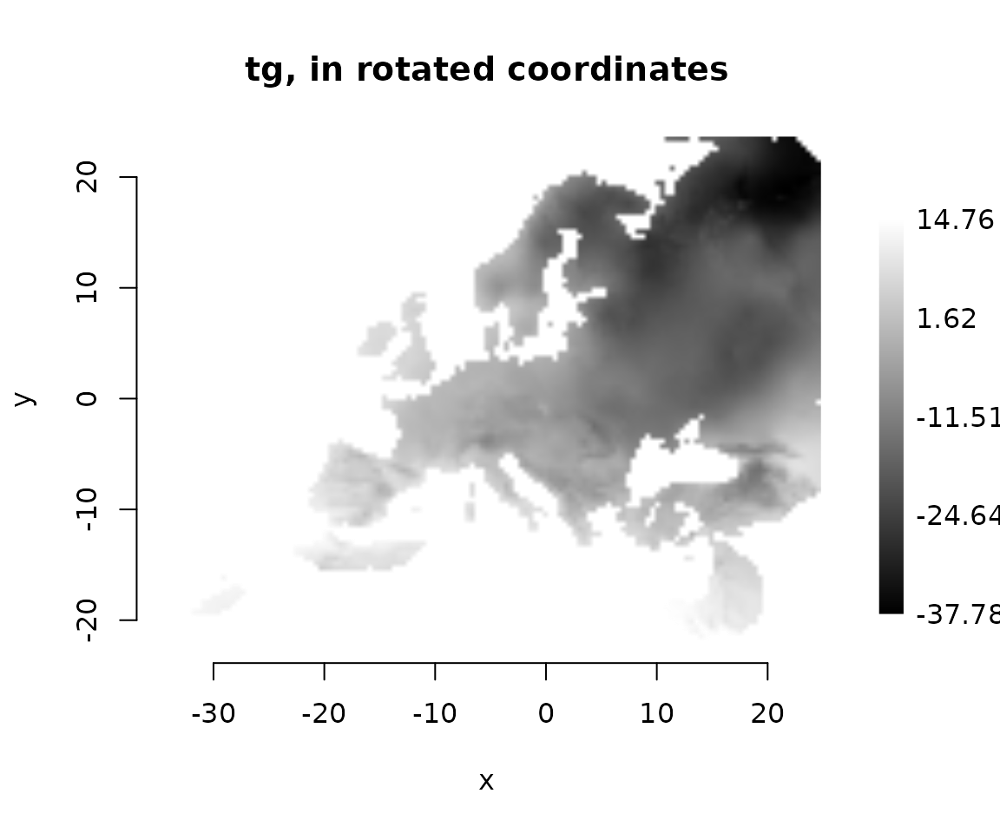

A fetch renders rows, one per cell. xr_raster() renders
the same statement as pixels instead: a plain vector of values in
left-to-right, top-to-bottom order, with a gis attribute
giving the extent, the dimensions, the CRS and the data type. That is
the form gdalraster’s read_ds() returns, so gdalraster can
plot it. No GDAL dataset is created, and gdalraster is only needed for
the plotting.
library(xrdbi)
library(DBI)
ex <- function(f) system.file("extdata/autotest", f, package = "xrdbi")
trmm <- dbConnect(xarray(), ex("trmm.nc"))
r <- xr_raster(trmm, "ds.pcp.isel(time=0)")
str(attr(r, "gis"))
#> List of 5
#> $ type : chr "raster"
#> $ bbox : num [1:4] -80 -20 -70 -10
#> $ dim : num [1:3] 40 40 1
#> $ srs : chr ""
#> $ datatype: chr "Float32"
gdalraster::plot_raster(r, legend = TRUE, main = "TRMM rainfall, January 2011")
xr_raster() takes a connection and a statement, or a
result from dbSendQuery(), and params as the
query functions do. It is guarded by max_cells like a
fetch.
Which dimensions are y and x
The selected DataArray must squeeze to two dimensions, (y, x), or
three, (band, y, x). y and x are the last two dimensions, whatever their
names. Data stored the other way round, (lon, lat), would render
transposed, so put it in order in the statement, with
.transpose('lat', 'lon'). Anything else is an error that
says what is left:
try(xr_raster(trmm, "ds.pcp.isel(time=0, latitude=0)"))
#> Error : need a 2-D slab or 3-D (band, y, x) stack after squeezing; got 1 dims: longitude; select further (e.g. isel a time)The y and x coordinates must be 1-D, numeric and regularly spaced, to the precision they are stored in (float32 grids are fine). They can run in either direction: rows and columns are put in top-left order, and the extent assumes the coordinates are cell centres. A curvilinear grid (2-D longitude and latitude) has no such rendering, and neither does a vector data cube; both are refused with the reason.
Bands
A third dimension becomes bands, band-sequential: all of band 1, then
band 2. Here is a small RGB GeoTIFF through the gdalxarray engine (it
needs the GDAL Python bindings). multidim = FALSE opens it
as a classic raster, one variable band_data over (band, y,
x):
tif <- dbConnect(xarray(), ex("rgbsmall.tif"), engine = "gdalxarray",
multidim = FALSE)
rgb <- xr_raster(tif, "ds.band_data")
attr(rgb, "gis")$dim
#> [1] 50 50 3
attr(rgb, "gis")$datatype
#> [1] "Byte" "Byte" "Byte"
gdalraster::plot_raster(rgb, nbands = 3)
as_list = TRUE gives a list of band vectors instead, as
read_ds(as_list = TRUE) does:
bands <- xr_raster(tif, "ds.band_data", as_list = TRUE)
lengths(bands)
#> [1] 2500 2500 2500
dbDisconnect(tif)The CRS
srs is the CRS as WKT, found in this order:
- an index that carries one: xproj’s
CRSIndex, which gdalxarray sets, or rasterix’sRasterIndex - a
crs_wktorspatial_refattribute, on aspatial_reforcrscoordinate, on the variable named by the CFgrid_mappingattribute, or on a dataset variable namedspatial_reforcrs - the CF parameters of the
grid_mappingvariable, through pyproj
and "" when none is found, as for the TRMM file. A
rotated-pole grid shows the ladder at work. rotated_pole.nc
stores temperature on a grid that is regular in rotated coordinates,
with a CF grid mapping holding the pole’s position but not the
grid_mapping_name that says what kind of mapping it is.
Read through netCDF4, nothing names the CRS:
nc <- dbConnect(xarray(), ex("rotated_pole.nc"), engine = "netcdf4")
names(reticulate::py_to_r(xr_dataset(nc)$projection$attrs))
#> [1] "grid_north_pole_longitude" "grid_north_pole_latitude"
#> [3] "north_pole_grid_longitude" "false_easting"
#> [5] "false_northing" "semi_major_axis"
#> [7] "semi_minor_axis"
attr(xr_raster(nc, "ds.tg"), "gis")$srs
#> [1] ""
dbDisconnect(nc)GDAL recognises the rotated pole from those parameters, and
gdalxarray carries the result on its CRSIndex:
gd <- dbConnect(xarray(), ex("rotated_pole.nc"), engine = "gdalxarray",
multidim = FALSE)
tg <- xr_raster(gd, "ds.band_data")
cat(substr(attr(tg, "gis")$srs, 1, 200), "...\n")
#> GEOGCRS["Rotated_pole",BASEGEOGCRS["unknown",DATUM["unnamed",ELLIPSOID["Spheroid",6367470,594.313048347956,LENGTHUNIT["metre",1,ID["EPSG",9001]]]],PRIMEM["Greenwich",0,ANGLEUNIT["degree",0.01745329251 ...Supplying the missing name in a builder lets pyproj build the CRS from the CF parameters instead, with the same grid:
fixed <- dbConnect(xarray(), builder = function(xr) {
ds <- xr$open_dataset(ex("rotated_pole.nc"), engine = "netcdf4")
ds$projection$attrs$update(list(grid_mapping_name = "rotated_latitude_longitude"))
ds
})
tg2 <- xr_raster(fixed, "ds.tg")
identical(attr(tg2, "gis")$bbox, attr(tg, "gis")$bbox)
#> [1] TRUE
grepl("Pole rotation", attr(tg2, "gis")$srs)
#> [1] TRUE
dbDisconnect(fixed)
gdalraster::plot_raster(tg, legend = TRUE, main = "tg, in rotated coordinates")
dbDisconnect(gd)
dbDisconnect(trmm)This grid is regular in its own frame, the rotated pole, and only curvilinear when drawn in ordinary longitude and latitude. The curvilinear grids article takes the other view of the same file.
Where next
-
?xr_rasterdocuments the arguments and thegisattribute. - Chunk maps show the storage blocks under a slab.